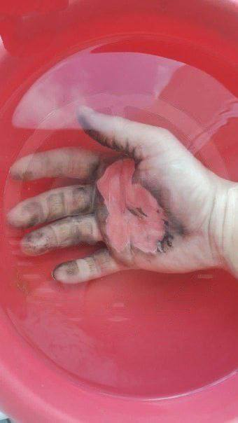

Рак легких — злокачественная опухоль
Рак легких — злокачественная опухоль, развивающаяся в тканях легких. Основные моменты:
Типы:
- Немелкоклеточный рак легких (НМРЛ) — 85% случаев (аденокарцинома, плоскоклеточный рак, большоклеточный рак).
- Мелкоклеточный рак легких (МРЛ) — более агрессивный, чаще связан с курением.
Факторы риска:
- Курение и пассивное курение
- Воздействие канцерогенов (асбест, радон)
- Семейная предрасположенность
- Возраст (особенно после 65 лет)
Симптомы:
- Постоянный кашель
- Кровь в мокроте
- Одышка
- Боль в груди
- Потеря веса
Диагностика:
- Рентгенография
- Компьютерная томография (КТ)
- Бронхоскопия
- Биопсия
Лечение:
- Хирургия
- Химиотерапия
- Лучевая терапия
- Иммунотерапия
- Таргетная терапия
Профилактика:
- Отказ от курения
- Избежание канцерогенов
- Регулярные медицинские осмотры
- Ранняя диагностика и лечение критически важны для повышения шансов на выживание.

Пневмония — воспаление легких
Пневмония — это воспаление легких, которое может быть вызвано инфекциями или неинфекционными факторами. Вот основные аспекты:
Причины:
- Бактериальная пневмония:- Наиболее распространенная форма.- Вызывается Streptococcus pneumoniae, Haemophilus influenzae и другими бактериями.
- Вирусная пневмония:- Может быть вызвана вирусами гриппа, коронавирусами (например, SARS-CoV-2), респираторно-синцитиальным вирусом и другими.
- Грибковая пневмония:- Реже встречается, чаще у людей с ослабленным иммунитетом.- Вызывается грибами, такими как Aspergillus или Pneumocystis.
- Неинфекционные факторы:- Вдыхание химических веществ, аллергенов или инородных тел.
Симптомы:
- Кашель (может быть сухим или с выделением мокроты)
- Одышка
- Bоль в груди (усиливающаяся при дыхании или кашле)
- Lихорадка и озноб
- Усталость
- Потеря аппетита
Диагностика:
- Физикальное обследование: Аускультация легких.
- Рентгенография грудной клетки для выявления воспалительных изменений.
- Компьютерная томография (КТ): более детальное изображение.
- Лабораторные тесты для определения возбудителя.
Лечение:
- Антибиотики:- Для бактериальной пневмонии.
- Противовирусные препараты для вирусной пневмонии.
Профилактика:
- Вакцинация (например, против пневмококка и гриппа).
- Соблюдение гигиенических мер (частое мытье рук).
- Избежание курения и пассивного курения.
- Укрепление иммунной системы (правильное питание, физическая активность).

Гипертония — артериальная гипертензия
Гипертония — хроническое заболевание с повышенным артериальным давлением. Может привести к осложнениям сердечно-сосудистой системы и почек.
Классификация:
- Первичная гипертония :
Не имеет известной причины. Развивается постепенно и связана с генетикой и образом жизни. - Вторичная гипертония :
Возникает из-за заболеваний почек, эндокринных расстройств или медикаментов.
Факторы риска:
- Неправильное питание (соль, насыщенные жиры)
- Избыточный вес и ожирение
- Недостаток физической активности
- Курение
- Алкоголь
- Стресс
- Наследственность
Симптомы:
- Головные боли
- Головокружение
- Одышка
- Усталость
- Затуманенное зрение
Диагностика:
- Регулярное измерение давления с помощью тонометра
- Анализы крови для оценки функции почек и электролитов
- ЭКГ для оценки состояния сердца
- УЗИ сердца для выявления изменений в сердечной мышце
Лечение:
- Изменения образа жизни:
- - снижение веса;
- - регулярная физическая активность;
- - здоровое питание;
- - отказ от курения;
- - умеренное употребление алкоголя;
Лекарственная терапия: - - антигипертензивные препараты (диуретики, ингибиторы АПФ и др.) ;
- - регулярные проверки давления;
- - управление стрессом;
- - сбалансированное питание;
Последствия курения

